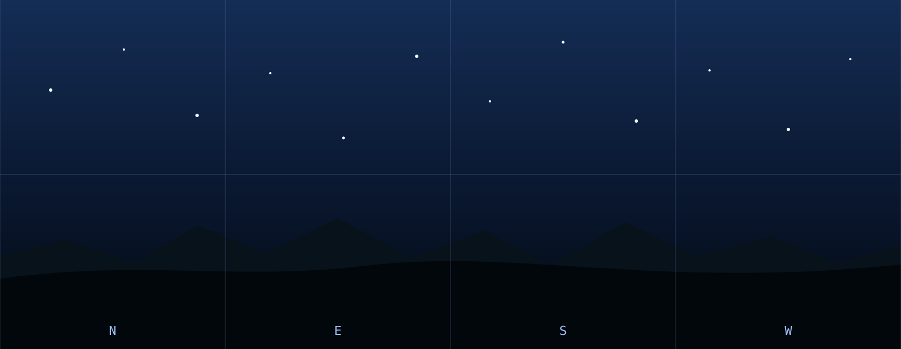

Selected frame / Projection view
Dewarped horizon
A panoramic interpretation of one published fisheye frame with explicit cardinal orientation.
Published frame / 11:48 PM HST
Horizon panorama

Selected frame / Projection view
A panoramic interpretation of one published fisheye frame with explicit cardinal orientation.
Published frame / 11:48 PM HST
